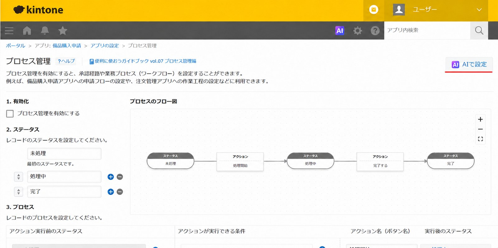
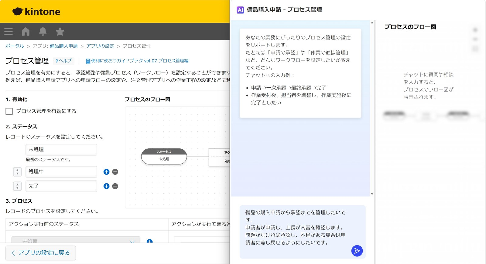
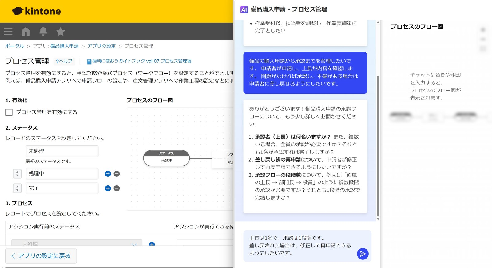
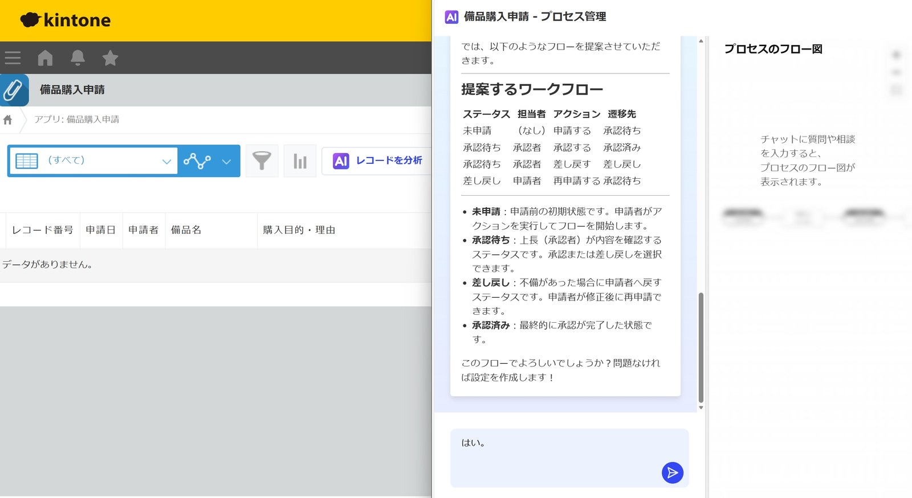
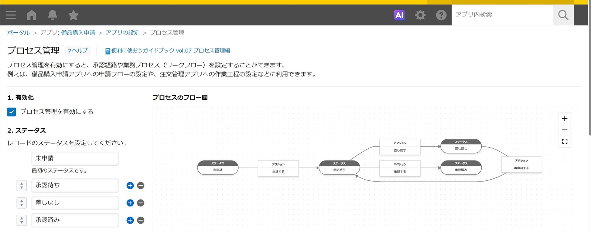
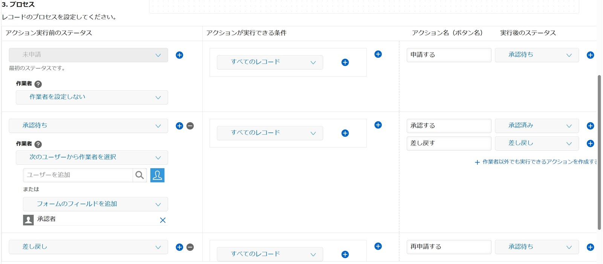

申請から承認までの業務フローは kintone 上で管理できますが、初めて設定するときは
「どのような進捗状況を用意すればよいのか」「担当者や操作はどう設定すればよいのか」と迷うこともあるのではないでしょうか。
そんなときに活用できるのが「プロセス管理設定AI」です。実際の画面とともにご紹介します。
はじめに
申請から承認までの業務フローは、kintone 上で管理できます。ただし、初めて設定する場合は、
「どのような進捗状況を用意すればよいのか」「担当者や操作はどう設定すればよいのか」と迷うこともあるのではないでしょうか。
そこで活用できるのが、kintone の「プロセス管理設定AI」です。
プロセス管理設定AIは、実現したい業務プロセスをチャットで伝えることで、AIがステータスや作業者、アクションなどの設定案を提案してくれる機能です。提案された内容は、そのまま設定画面に反映することができます。
kintoneのプロセス管理とは？
kintone の「プロセス管理」は、複数のユーザーがレコード（1件ごとのデータ）を確認・処理していく業務の流れを管理するための機能です。
たとえば、申請者が申請し、上長が確認して承認する申請業務では、
申請前 → 承認待ち → 承認済み といった現在の進捗状況を kintone 上で確認できます。
ステータス（進捗状況）
業務が今どの段階にあるのかを示すものです。たとえば「未申請」「承認待ち」「承認済み」のように、現在の進み具合を表します。
作業者（担当者）
その段階で対応する人のことです。たとえば「承認待ち」のときに確認する上長を、作業者として設定します。
アクション（操作）
次の段階へ進むための操作です。たとえば「申請する」「承認する」「差し戻す」といったボタンとして表示されます。
これらを組み合わせることで、申請・承認業務だけでなく、問い合わせ対応や案件管理など、誰が対応するのか、今どこまで進んでいるのかを管理したい業務にも活用できます。
kintoneの「プロセス管理設定AI」とは？
プロセス管理設定AIは、AIチャットを利用してプロセス管理の設定をサポートする機能です。
アプリ名や、フォーム（データを入力・表示するための画面）内のユーザー選択・組織選択・グループ選択フィールドなどの設定情報をもとに、AIがステータス、作業者、アクションなどの構成を提案します。AIとの会話を続けながら、設定内容を調整することもできます。
進め方は次の流れです。
- 「どのような業務を管理したいか」を自然な文章で伝える
- AIからの質問に答えながら条件を整理する
- 提案されたワークフローを確認して設定へ反映する
それでは、実際に使ってみましょう。
プロセス管理設定AIを使ってみました
今回は、社内で使用する備品の購入申請を例に設定していきます。
申請者が備品の購入を申請し、上長が内容を確認します。問題がなければ承認し、不備がある場合は申請者へ差し戻します。差し戻された場合は、内容を修正して再申請できる流れにします。
1．プロセス管理設定AIを開く
まず、対象となるアプリの設定画面を開き、「設定」タブから「プロセス管理」へ進みます。プロセス管理画面の上部にある「AIで設定」をクリックすると、プロセス管理設定AIの画面を開くことができます。

2．AIに実現したい業務フローを伝える
プロセス管理設定AIを開いたら、チャットの入力欄に実現したい業務の流れを入力します。今回は、次のように入力しました。
備品の購入申請から承認までを管理したいです。申請者が備品の購入を申請し、上長が内容を確認します。問題がなければ承認し、不備がある場合は申請者に差し戻せるようにしたいです。
プロセス管理の専門用語を並べるのではなく、実際の業務の流れをそのまま文章で伝えているのがポイントです。

3．AIからの質問に回答する
最初の指示を送信すると、申請から承認までの流れを具体的にするため、AIからいくつか質問が表示されました。今回は、次のような内容について確認されました。
- 承認者は何名か
- 複数の承認者がいる場合、全員の承認が必要か
- 差し戻し後に再申請できるようにするか
- 承認は1段階か、複数段階か
そこで今回は、「承認者は上長1名」「差し戻し後は修正して再申請可能」「承認は1段階」という条件で回答しました。このように、AIからの質問に答えながら申請から承認までの流れを整理していけます。

4．AIが提案したワークフローを確認する
AIとのやり取りを進めると、4つのステータスからなるワークフローが提案されました。
- 未申請
まだ申請をしていない状態です。申請者が「申請する」を選ぶと、「承認待ち」へ進みます。 - 承認待ち
上長が申請内容を確認している状態です。問題がなければ承認し、修正が必要な場合は申請者へ差し戻します。 - 差し戻し
申請内容の修正が必要となり、申請者へ戻された状態です。申請者は内容を修正したあと、再度申請できます。 - 承認済み
上長の確認と承認が完了した状態です。
AIに文章で伝えた業務の流れが、ステータスや担当者、操作内容に整理されて表示されるため、設定後の流れを確認しやすくなっています。

5．提案内容を確認して設定に反映する
提案されたワークフローの内容を確認し、問題がなければ設定へ反映します。反映後にプロセス管理の設定画面を確認すると、提案されたステータスやアクションがそのまま設定されていました。


プロセス管理設定AIを使って感じたメリット
実際に使ってみて特に感じたのは、プロセス管理の設定に慣れていない場合でも、業務の流れを整理しながら設定案を作りやすい点です。
通常、プロセス管理を設定するときは、「どのようなステータスが必要か」「誰を作業者にするか」「どのアクションでどこへ進めるか」を整理する必要があります。プロセス管理設定AIでは、実現したい業務を文章で伝え、AIからの質問に答えていくことで、設定案が少しずつ具体化されました。
普段の業務では「申請して、上長が確認して、問題があれば戻す」と理解していても、それを kintone のステータスやアクションとしてどのように表現するか迷うことがあります。AIの提案を参考にしながら設定を考えられるため、プロセス管理の流れをイメージしやすくなります。
一方で、実際の業務では、申請内容によって承認する人が変わったり、複数の承認が必要になったりする場合もあります。そのため、AIが提案した設定をそのまま使うのではなく、実際の業務の流れに合っているか確認し、必要に応じて調整することが大切です。
備品購入申請以外にも活用できる業務は？
プロセス管理は、備品購入申請以外にも、担当者や進捗状況を管理したいさまざまな業務に活用できます。
- 社内の申請業務
経費申請、休暇申請、稟議申請など、申請から承認までの流れがある業務に活用できます。 - 問い合わせ対応
受付から対応中、完了までの進捗と、担当者を管理できます。 - 案件管理
案件の状況がどこまで進んでいるのかを、担当者とあわせて把握できます。 - 契約書の確認フロー
確認・修正・承認といった段階を分けて管理できます。
ただし、必要なステータスや承認段階、担当者は業務によって異なります。たとえば、上長1名の承認だけで完了する申請もあれば、金額や内容によっては、部門長や役員など複数の承認が必要になることもあります。AIの提案を参考にしながら、自社の業務に合った流れへ調整していきましょう。
まとめ
kintone のプロセス管理を活用すると、申請から承認までの流れや、現在の進捗状況を管理できます。
今回は、備品購入申請を例にプロセス管理設定AIを使い、AIとの会話を通して「申請」「承認」「差し戻し」「再申請」の流れを設定しました。AIからの質問に答えながら条件を整理できるため、プロセス管理の設定に慣れていない場合でも、業務フローを考えるきっかけになりそうです。
kintone で申請・承認業務を管理したい方は、自社の業務に合わせて、プロセス管理設定AIを活用してみてはいかがでしょうか。